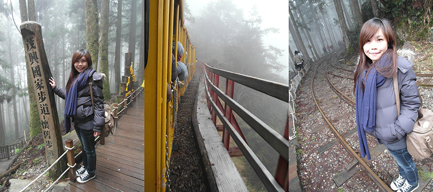
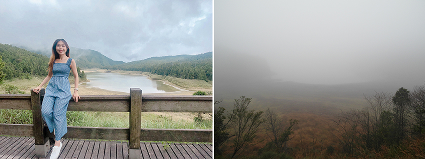

這陣子因為疫情關係，無法出國遊玩，只好找台灣的景點來去走走，安排來去宜蘭太平山一日遊。太平山上四季都有不同風情，夏天很適合山上避暑，也滿適合帶小朋友或長輩一起走走吸收大自然芬多精。
在太平山國家森林遊樂區內，有9條步道可以走，其中有包括這陣子很紅，被CNN評點台灣唯一全球最美28條小路 見晴懷古步道，還有台灣最大高山湖泊 翠峰湖。
*自109年7月15日至109年12月31日，林務局推出國人與持有居留證的外籍人士，均可於太平山、內洞、滿月圓、東眼山、大雪山、八仙山、奧萬大、阿里山、墾丁、雙流、知本、池南等12處國家森林遊樂區任選1處享免費入園1次的優惠唷!
宜蘭一日遊(太平山)行程路線：07:30台北出發→ 中間解說站→ 白嶺巨木→ 翠峰湖 (停留1小時)→ 太平山莊午餐/蹦蹦車 (停留2小時)→ 見晴懷古步道/雲海(停留1小時)→ 15:30下山返北。
當排隊入園的時候，收費人員有給一張小單子，需要請車上的人先填，會協助保險及*核對身分證件(*如你有需要適用免費入園一次)，也會發園區地圖 (太平山旅遊導覽手冊)，上面有寫著9條步道的步行往返全程時間(步道開放狀態)：
- 鳩之澤手作步道 0.4公里 30分鐘
- 鳩之澤自然步道 1.2公里 1小時
- 見晴懷古步道 0.9公里 1小時
- 檜木原始林步道 0.6公里 1小時
- 鐵杉林自然步道 1.3公里 2小時
- 茂興懷舊步道 0.9公里 1小時
- 翠峰湖環山步道 3.9公里 3小時
- 望洋山步道 1.2公里 2小時
- 台灣山毛櫸步道 3.8公里 4小時
宜蘭景點｜中間解說站
進入太平山森林遊樂區後，因為車程有點小遠，可以在這休息去洗手間。昔日太平山索道的中點，因位於位於昔日鳩之澤、索道起點與蘭台之間，所以稱為中間。
 |
此遊客中心(服務時間08:00-17:00)，設有展示區及多媒體室，讓你搶先欣賞太平山之美，戶外有一台黑色的蒸汽集材機，是當年用於拉動鋼索來拖拉木材，是林場不可或缺的重要器具。
宜蘭景點｜白嶺巨木
從中間解說站到白嶺巨木，車程約12分鐘，會看到路邊有這麼一棵的大樹，如車速過快，就會錯過這一棵已經超過2500歲的紅檜爺爺唷！由於午後常雲霧籠罩，山頭會是一片霧氣白茫茫，因此為白嶺而得名(樹高30公尺，約十層樓高，胸徑3.4公尺，胸圍9.4公尺，要6人才能合抱)，如果想要停下車來與大樹合照，記得注意周遭來車。
宜蘭景點｜太平山莊遊客中心/蹦蹦車
太平山莊服務站內，有賣零食飲料，如果午餐沒訂到餐廳或想解饞，這裡都可買，只不過山上物資會比較貴一點。
在太平山上的遊客中心內有大大的美照寫著，關於太平山：
- 太平山為三大林場之一
- 全球最美小路森林步道見晴懷古步道
- 台灣最大高山湖泊翠峰湖
- 台灣唯一高山台車蹦蹦車
- 台灣碧藍美人湯鳩之澤溫泉
- 宜蘭海拔最高廟宇鎮安宮
- 台灣第一家金級環保旅館
由於是是八月到訪，還沒有完全秋天楓紅的時候，不然這條階梯應該也是會很美，繼續樓梯上去，還可以走 檜木原始林步道(步道全長610公尺，約1小時)、鐵杉林自然步道 (步道全長1.3公里，約2小時)，而我們在這裡停留的時間預計只有2小時，要用餐再加上走步道的話，覺得會有些趕，所以就只有在這附近逛逛~等用餐。
如果你想搭蹦蹦車，真的是要透早六七八點來排吧？！我是平日11:00到，售票僅剩15:30最後梯次票了，那你想想如果是週末人潮，不早一點來，還會有票嗎~哈 (蹦蹦車車票為來回票，一律現場購買，每日上午7點開始販售，每人每次限購20張車票，全票NT$180/優待票NT$120，住宿太平山莊及翠峰山屋之遊客可預購翌日頭2班之列車)。
這次本來也想搭，但買不到車票，於是就在旁邊逛，也在車站內，蓋了紀念章，紀念我來太平山到此一遊。而我回家，想說來翻翻看我之前去太平山照片，居然翻到，我八年前就有搭過蹦蹦車了(!!)還真的是完全失憶欸><。
搭乘蹦蹦車可以抵達茂興站月台，走 茂興懷舊步道 (步道全長900公尺，約1小時)，記得八年前2012年2月19去的時候，是很冷天氣，還起大霧，又濛又冷，從平台望出去的風景，就是一片白牆。如果是冬天來太平山玩的人，記得要多注意保暖!山上的溫度，更是比平地少了幾度。
|  |
宜蘭景點｜翠峰湖環山步道
還沒有機會去到台東嘉明湖天使的眼淚，只好先來看看宜蘭版天使的眼淚翠峰湖，覺得很像~就也很美。翠峰湖環山步道的東口，離翠峰湖觀湖平台比較近，走不到10分鐘就可以到。
之前聽朋友說走完翠峰湖一圈，後面風景好像沒什麼好看的，建議在觀湖平台這邊看就好。雖然我這天來，看似八月的湖水，不是很滿，有點乾乾的~再加上沒有藍天白雲的好天氣，也沒有碧藍的湖水和倒映，所以有點小失望說~但至少比我上次冬天來的時候一片白牆美多了哈哈!
|  |
翠峰湖為臺灣最大高山湖泊，海拔1,840公尺，雨季時湖面達25公頃，為台灣最大的高山湖泊。不同的季節來，會有不同的感受呢！四季體驗：春浴新綠、夏洗雨霧、秋賞紅葉、冬觀白雪。
宜蘭景點｜見晴懷古步道
「見晴，景如其名。久雨初晴之際可遠眺奇峰崢嶸的聖稜線；午后常有瑰麗如詩的雲海，有時久陷白茫茫的霧中，反而湧起渴望見晴的心情，此乃「見晴」地名之由來。」 看著文字介紹，的確走在見晴懷古步道上，深深覺得有fu。
有人說就要是這種雲霧迷濛的天氣，那才是真的遇見見晴的真面目。我是下午兩點抵達，就讓我遇見了迷霧森林。(步道全長900公尺，往返約1小時)
在山區裡下午起霧的機率也是滿高，覺得幸運的是，該拍的美照有先都拍了，不然下雨還要拍的美美，實在很難欸！
走完見晴懷古道之後，讓我也想起我去嘉義阿里山走的兩條步道綜合版 ( 特富野古道 + 奮瑞古道 )，跟見晴懷古步道很像欸！有機會的話，大家也來去嘉義阿里山走走阿~覺得也不輸見晴的美唷！